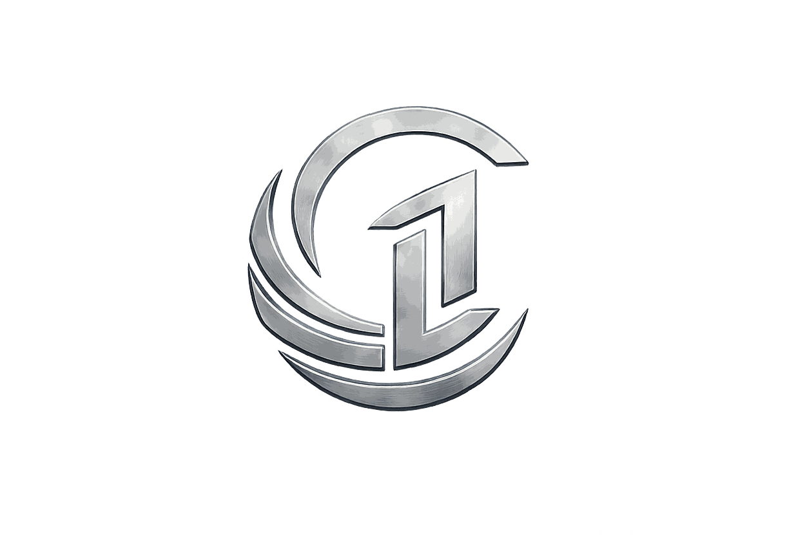
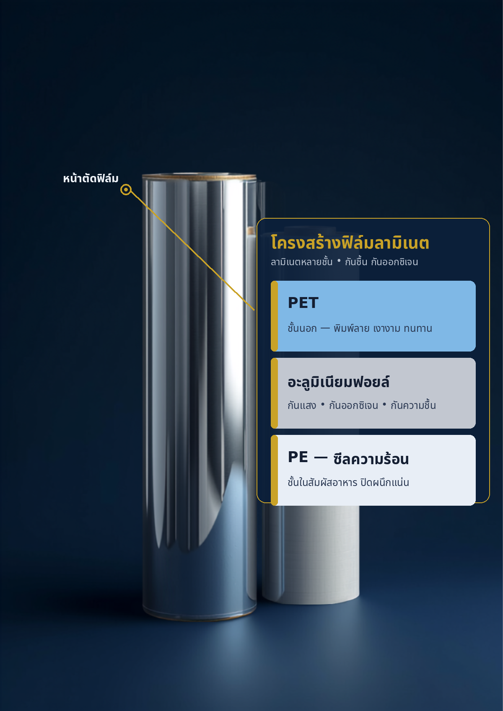

โครงสร้างฟิล์มลามิเนตคือฟิล์มหลายชนิดประกบเป็นชั้น เช่น PET12/ALU7/LL80 — ชั้นนอกรับงานพิมพ์ ชั้นกลางกันแสงกันชื้น ชั้นในซีลติดกัน ตัวเลขคือความหนาเป็นไมครอน บทความนี้อธิบายว่าแต่ละชั้นทำอะไร และสินค้าแบบไหนควรใช้โครงสร้างไหน

ฟิล์มชนิดเดียวทำได้ไม่ครบทุกอย่าง ตัวที่พิมพ์สวยมักซีลไม่ติด ตัวที่กันแสงได้ก็เปราะเมื่ออยู่ลำพัง โรงงานจึงลามิเนต คือใช้กาวประกบฟิล์ม 2-3 ชั้น ให้แต่ละชั้นรับหน้าที่ของตัวเอง ซองที่ได้จึงพิมพ์สวย กันสินค้าเสื่อม และซีลแน่นในแผ่นเดียว
ชื่อโครงสร้างเขียนเรียงจากชั้นนอกสุดไปชั้นในสุด คั่นด้วยเครื่องหมาย / ตัวอักษรคือชนิดฟิล์ม ตัวเลขคือความหนาเป็นไมครอน (1 ไมครอน เท่ากับ 1 ในพันของมิลลิเมตร) ดังนั้น PET12/ALU7/LL80 หมายถึงซองที่ผิวนอกเป็น PET หนา 12 ไมครอน กลางเป็นฟอยล์อลูมิเนียม 7 ไมครอน และด้านในเป็น LLDPE หนา 80 ไมครอน รวมความหนาทั้งแผ่นประมาณ 99 ไมครอนบวกชั้นกาวบางๆ ที่ประกบระหว่างชั้น
โรงงานถามว่า "ใช้โครงสร้างอะไร" จึงไม่ได้ถามแค่ความหนารวม แต่ถามว่าชั้นไหนทำจากอะไร หนาแค่ไหน เพราะซองหนาเท่ากันสองใบกันความชื้นได้ต่างกันมากถ้าใบหนึ่งมีฟอยล์และอีกใบไม่มี ส่วนลายพิมพ์จะพิมพ์ที่ด้านหลังของชั้นนอกแล้วประกบชั้นถัดไปทับ หมึกจึงอยู่ระหว่างชั้นฟิล์ม ไม่ถลอกและไม่สัมผัสสินค้า
ถ้ากำลังเปลี่ยนโรงงานผลิตซอง ขอสเปคโครงสร้างเดิมจากใบเสนอราคาเก่าหรือส่งซองเดิมมาให้เราดู จะเทียบได้ตรงกว่าบอกแค่ "ซองฟอยล์" หรือ "ซองใสหนาๆ" ดูตัวอย่างงานที่ ถุงฟอยล์ ซองฟอยล์ และ ซองพลาสติก ซองซิป ซองแวคคั่ม ประกอบได้
ฟิล์ม 6 ชนิดที่พบในซองบรรจุภัณฑ์เกือบทุกใบ จำหน้าที่ของแต่ละตัวได้ ก็อ่านสเปคซองเป็น
โครงสร้างที่โรงงานผลิตให้ลูกค้าเป็นประจำ ตัวเลขคือความหนาต่อชั้น (ไมครอน) ปรับได้ตามน้ำหนักบรรจุ
| โครงสร้าง | มองเห็นสินค้า | จุดเด่น | เหมาะกับสินค้า | รูปแบบซองที่นิยม |
|---|---|---|---|---|
| PET12 / LL50-110 | ใส | โครงสร้างพื้นฐานที่คุ้มค่าที่สุด พิมพ์คม ซีลแน่น เลือกความหนา LL ตามน้ำหนักบรรจุ | ของแห้งทั่วไป ผงซักฟอก น้ำยา ของใช้ สินค้าที่ไม่ไวต่อแสงมาก | ซีล 3 ด้าน · ถุงซิป · ก้นตั้ง |
| PET12 / ALU7 / LL80 | ทึบ | กันแสง ความชื้น ออกซิเจน ได้สูงสุดในกลุ่ม เก็บกลิ่นและความหอมของสินค้าไว้ได้ | กาแฟคั่วบด ผงชง สมุนไพร อาหารเสริม เครื่องเทศ ครีม/เจลที่ไวต่อแสง | ซีล 3 ด้าน · ก้นตั้งซิป · ซองซาเช่ · ม้วนออโตแพค |
| NY15 / LL65-85 | ใส | เหนียว ทนเจาะทะลุ ทนเย็นจัด รัดตามรูปสินค้าเมื่อดูดสุญญากาศ | เนื้อสัตว์ ไส้กรอก อาหารทะเล อาหารแช่แข็ง ข้าวสาร ของหนักหรือมีมุมแหลม | ถุงสุญญากาศ · ซีล 3 ด้าน · ก้นตั้ง |
| OPP20 / CPP25 | ใส | เบา กรอบ ใสแจ๋ว วิ่งบนเครื่องบรรจุอัตโนมัติได้ดี ต้นทุนฟิล์มต่อซองต่ำ | ขนมขบเคี้ยว ขนมปัง เบเกอรี่ ลูกอม ของกินเล่นที่หมุนเวียนเร็ว | ซองซีลกลางหลัง · ม้วนฟิล์มออโตแพค |
| PET12 / MPET12 / LL | ทึบ (เงาโลหะ) | ลุคเงาเมทัลลิกโดดเด่นบนชั้นวาง กันแสง-ชื้นระดับกลาง-สูง เบากว่าและทนพับกว่าฟอยล์แท้ | ขนม กาแฟ ผงชงบางประเภท อาหารสัตว์เลี้ยง สินค้าที่ต้องการภาพลักษณ์พรีเมียม | ก้นตั้งซิป · ซีล 3 ด้าน · ซองขนม |
ตัวเลขความหนาเป็นค่าที่ใช้กันทั่วไป งานจริงปรับตามน้ำหนักบรรจุ ขนาดซอง และเครื่องบรรจุของลูกค้า — อ่านเรื่องปริมาณสั่งผลิตต่อได้ที่ MOQ คืออะไร สั่งซองขั้นต่ำเท่าไหร่ ผลิตกี่วัน
ตอบ 4 ข้อนี้ได้ โครงสร้างที่เหมาะจะเหลือแค่ 1-2 ตัวเลือก
โดนแสงแล้วซีด โดนชื้นแล้วจับตัว โดนอากาศแล้วกลิ่นหาย ให้มองกลุ่มฟอยล์ ALU หรือ MPET ถ้าสินค้าทน หมุนเวียนเร็ว ซองใส PET/LL หรือ OPP/CPP ก็พอ
สินค้าที่หน้าตาขายได้ เช่น ธัญพืช ผลไม้อบแห้ง เนื้อสัตว์ ใช้ซองใสหรือทำหน้าต่างใส ถ้ารูปลักษณ์ไม่ใช่จุดขาย ซองทึบพิมพ์เต็มใบโชว์แบรนด์ได้เต็มที่กว่า
ใช่ข้อใดข้อหนึ่ง ต้องมีชั้นไนลอน NY ในโครงสร้าง PET ธรรมดาเปราะในความเย็นและทะลุง่ายเมื่อดูดสุญญากาศจนแนบสินค้า
น้ำหนักบรรจุกำหนดความหนาชั้น LL และรูปแบบซอง ซองซาเช่ไม่กี่กรัมใช้ LL บางได้ ถุง 1 กิโลกรัมต้องหนาขึ้นและอาจต้องเป็นก้นตั้งที่รับน้ำหนักได้ดีกว่า
ใช้ฟอยล์กับทุกอย่าง — สินค้าที่หมุนเวียนในไม่กี่สัปดาห์และไม่ไวต่อแสง ใช้ซองใส PET/LL ก็เก็บได้ครบอายุที่ต้องการและยังโชว์สินค้าได้ เลือกให้พอดีกับอายุการขายจริง ไม่ใช่ตัวที่กันได้มากที่สุดเสมอ
ใช้ PET/LL กับของแช่แข็งหรือดูดสุญญากาศ — ถุงแตกที่มุมหรือซีลปริหลังเข้าห้องเย็น สาเหตุไม่ใช่ซีลไม่ดี แต่ฟิล์มไม่เหนียวพอ ควรเปลี่ยนมาที่ ถุงสุญญากาศไนลอน NY/LL ตั้งแต่แรก
ก๊อปสเปคจากคู่แข่งโดยไม่ดูสินค้าตัวเอง — สินค้าหน้าตาคล้ายกันอาจต่างกันที่ปริมาณน้ำมัน ความชื้น หรือวิธีบรรจุ บอกเราว่าสินค้าคุณคืออะไร บรรจุอย่างไร เก็บนานแค่ไหน แล้วค่อยเทียบสเปค
เปลี่ยนโรงงานแต่ไม่ส่งซองเดิมมาให้ดู — ซองเดิมบอกได้ทั้งโครงสร้าง ความหนา คุณภาพซีล และปัญหาที่เคยเจอ เราจึงเสนอได้ว่าจะทำเทียบเท่าหรือปรับส่วนไหน งานม้วนวิ่งเครื่องบรรจุดูเพิ่มที่ ม้วนฟิล์มออโตแพค และ ม้วนฟิล์มลามิเนต ฟอยล์
คำถามที่ลูกค้าถามเราบ่อยที่สุดเรื่องชั้นฟิล์ม
อ่านจากชั้นนอกเข้าชั้นใน: PET หนา 12 ไมครอนเป็นชั้นนอกที่รับงานพิมพ์, ALU คือฟอยล์อลูมิเนียม 7 ไมครอนเป็นชั้นกลางกันแสงกันชื้น, LL คือ LLDPE หนา 80 ไมครอนเป็นชั้นในที่ซีลติดกันและสัมผัสสินค้า ตัวเลขทุกตัวคือความหนาของชั้นนั้นเป็นไมครอน (1 ไมครอน = 1 ในพันของมิลลิเมตร)
ซองใสส่วนใหญ่คือ PET/LL หรือ NY/LL ลูกค้ามองเห็นสินค้าได้ แต่แสงและอากาศผ่านได้มากกว่า ซองฟอยล์ PET/ALU/LL ทึบแสงทั้งหมดและกันความชื้น-ออกซิเจนได้ดีที่สุดในกลุ่มฟิล์มอ่อนตัว เลือกฟอยล์เมื่อสินค้าเสื่อมจากแสงหรือความชื้นเร็ว เช่น กาแฟคั่วบด ผงชง สมุนไพร อาหารเสริม เลือกแบบใสเมื่ออยากโชว์สินค้าและตัวสินค้าไม่ไวต่อแสงมาก
ไนลอนมีความเหนียว ทนแรงดึงและแรงเจาะทะลุได้ดีกว่า PET และยังยืดหยุ่นได้ในความเย็นจัด เวลาดูดสุญญากาศฟิล์มจะรัดเข้ากับสินค้าที่มีมุมหรือกระดูก ถ้าใช้ PET/LL ธรรมดามุมแหลมมักทะลุหรือซีลปริ โครงสร้าง NY15/LL65-85 จึงเป็นมาตรฐานของถุงสุญญากาศ ถุงแช่แข็ง และถุงบรรจุของที่มีน้ำหนักมาก
ชั้น LL ยิ่งหนา ซีลยิ่งแข็งแรงและถุงยิ่งรับน้ำหนักได้มาก แต่ก็ใช้ฟิล์มต่อซองมากขึ้น ซองเล็กบรรจุของเบา เช่น ซองซาเช่ ซองผง มักใช้ราว 50-65 ไมครอน ซองบรรจุครึ่งกิโลถึงหนึ่งกิโล ของแช่แข็ง หรือของที่มีน้ำ ใช้ราว 80-110 ไมครอน ส่งน้ำหนักบรรจุและรูปแบบซองมาให้เราดู เราจะเสนอความหนาที่พอดีกับงาน ไม่หนาเกินจนสิ้นเปลือง
ส่งรูปซองหรือม้วนเดิมมาทาง LINE พร้อมบอกว่าบรรจุอะไร น้ำหนักเท่าไหร่ และเก็บนานแค่ไหน ถ้ามีตัวอย่างจริงส่งมาให้จับดูจะยิ่งแม่น เราดูจากความใส ความแข็ง เนื้อสัมผัส และการซีล แล้วบอกได้ว่าเป็นกลุ่มโครงสร้างไหน จากนั้นจึงเสนอสเปคที่เทียบเท่าหรือปรับให้เหมาะกว่าเดิม
บอกเราว่าบรรจุอะไร น้ำหนักเท่าไหร่ อยากเก็บนานแค่ไหน หรือส่งรูปซองเดิมมาก็ได้ เราช่วยดูโครงสร้างที่พอดีกับงานให้ก่อน ไม่มีค่าใช้จ่าย